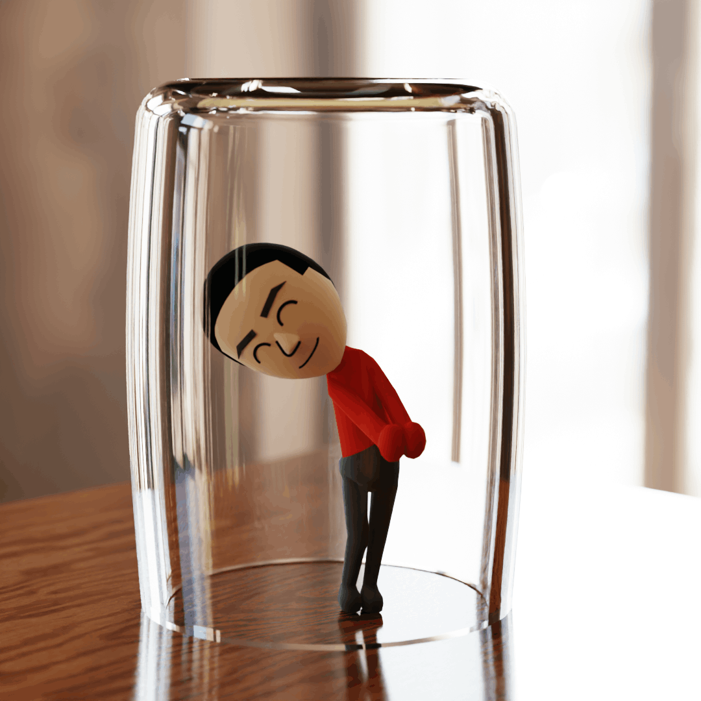
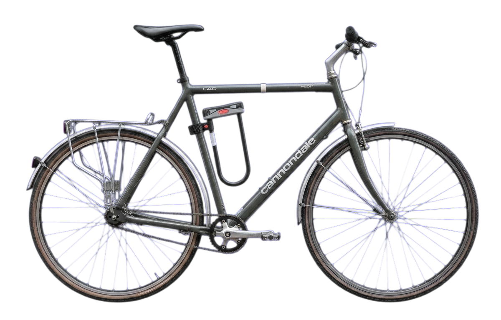
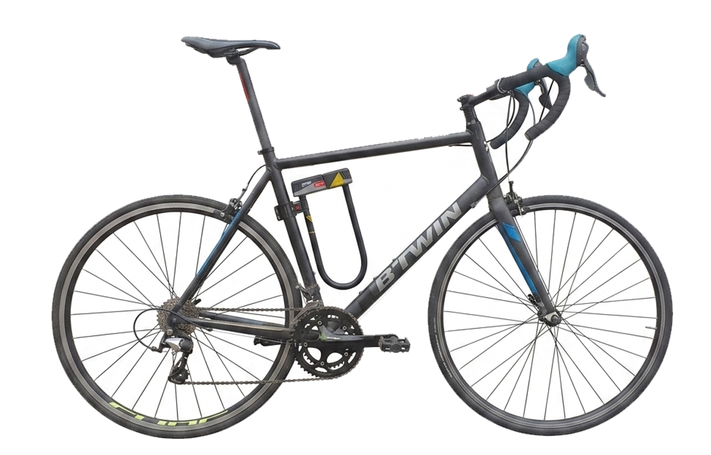
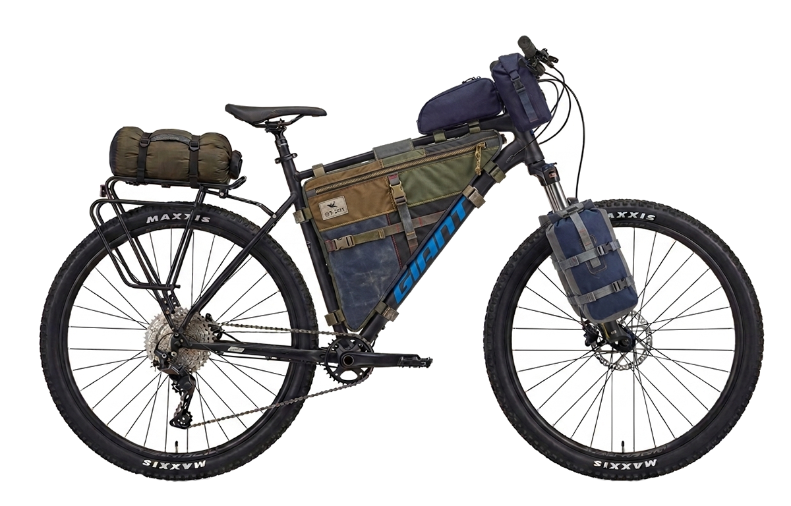

hello! i'm toby. i take photos, make graphics, and code terrible beats (i coded this site in vsc so apologies if anything is broken :)
i'm big into bicycles (its essentially most of what i do) and i study engineering so i'm hoping to do something mech related in the future. atm i volunteer at biko bikes (come along if you need your bike repairing pro bono). my uni commuter is a cannondale caad 1 which i hate and love at the same time.

i used to have a triban 500 which i bikepacked through holland and belgium on, but the curry mile mercilessly destroyed it two weeks into uni. basically i crashed :( i miss you beer diary bike. anyway i'm gonna restore it at some point, just saving up for a new groupset.

my current bikepacking rig is a giant talon, al hardtail. very messy, quite rattly.

at the moment big thief, oxis, boards of canada, daft punk, headache/vegyn.
i take after my father's schurniverse obsession: the office, b99, the good place. also a big fan of bcs and bb.
i kill time on old driving games (burnout mostly) or learning adrianne lenker songs on guitar [i used to play the drums but i don't want my flatmates to hate me so have given it up for the time being].
hell yeah. if you want to get in touch:
instagram: @tobjav
email: tobjav@yahoo.com
[ik, yahoo email skull emoji]